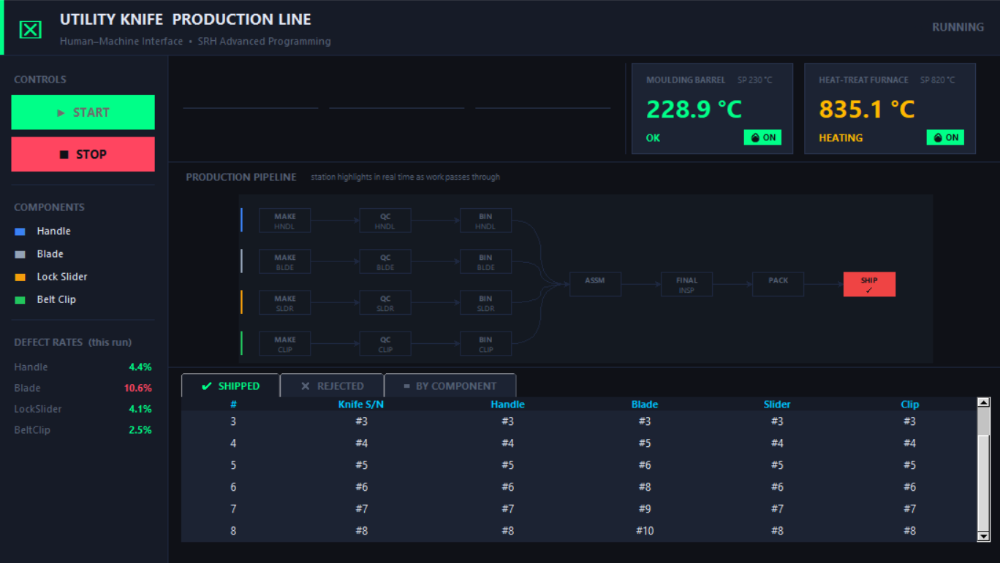
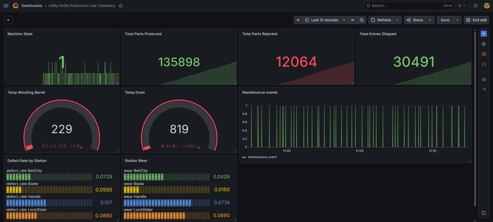
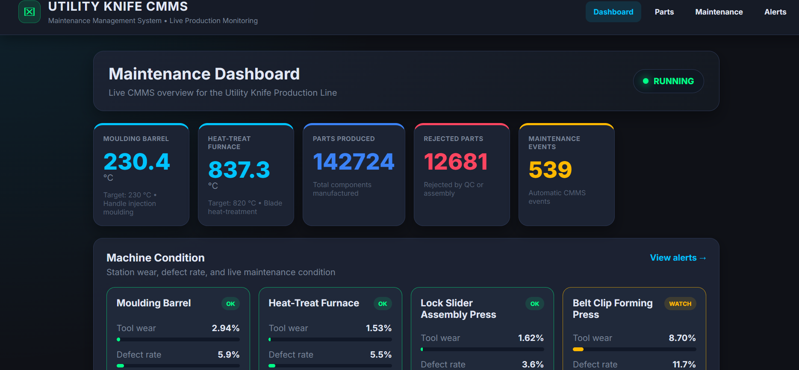
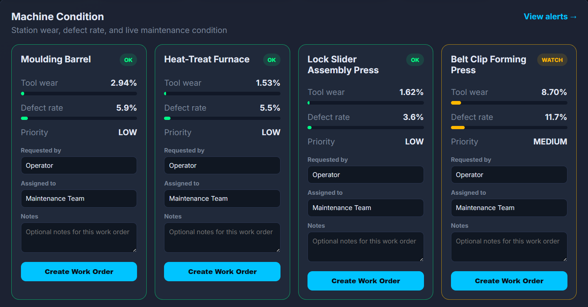

A full-stack simulation of a real manufacturing process: live telemetry, dashboards, maintenance management, and more.
Overview
The Utility Knife Production Line simulates a real manufacturing process — from blade moulding to handle assembly and final shipping. Every station produces live telemetry data that flows through a pipeline of tools: InfluxDB stores the measurements, Grafana visualizes them in real time, and a custom CMMS website lets operators manage maintenance and track machine health.
It is not just a simulation. It is a complete production-grade system architecture built as part of Advanced Programming coursework at SRH.
System Architecture
utility_knife_production_line.py runs the stations: Handle, Blade, LockSlider, BeltClip. Each station tracks wear, defect rate, and state.
producer.py reads live values and streams them into InfluxDB — temperatures, parts produced, defect rates, wear levels, maintenance events.
A Docker-hosted time-series database storing all telemetry. The CMMS and Grafana both query this data in real time.
Live Grafana panels visualize production metrics: temperatures, part counts, defect rates, station wear, and maintenance events.
A Flask-powered web app where operators can view machine health, create work orders, and close maintenance tasks — all synced with live InfluxDB data.
Screenshots
Click any image to view full size — use arrows or keyboard to browse.

[ uk-hmi.png not found ]HMI — Human-Machine Interface showing live station status

[ uk-grafana.png not found ]Grafana — production metrics dashboard in real time

[ uk-cmms-dashboard.png not found ]CMMS — maintenance monitoring and work order management

[ uk-work-orders.png not found ]CMMS — work order creation and tracking per station
CMMS Features
Create, track, and close maintenance work orders per station. Each order records the station, issue type, and completion status.
The CMMS reads live telemetry directly from InfluxDB — tool wear, defect rates, temperatures — displayed in the dashboard.
If wear exceeds 10% or defect rate exceeds 22%, the system flags the station and recommends corrective or preventive maintenance.
Monitor all four stations — Handle, Blade, LockSlider, BeltClip — with per-station health indicators.
The full project including Docker setup, producer, CMMS, and simulation is on GitHub.
View on GitHub →